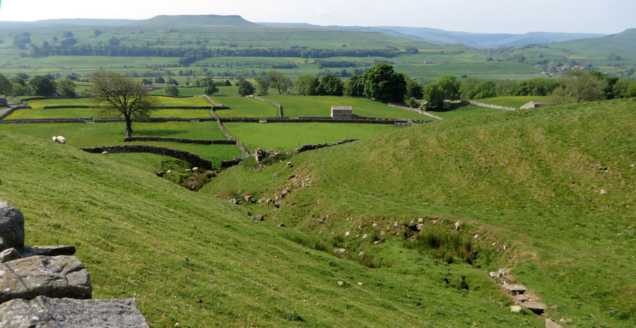
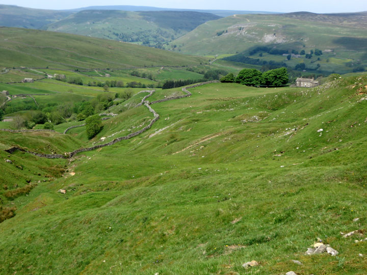
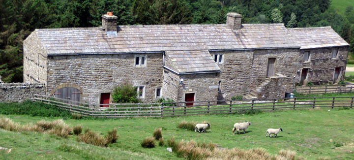
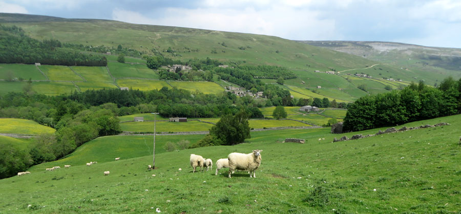
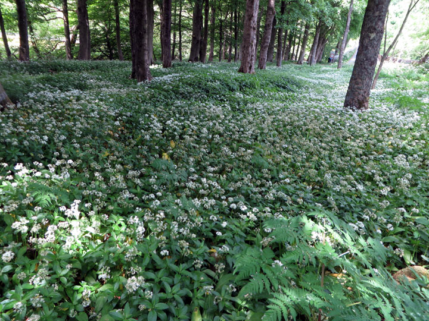
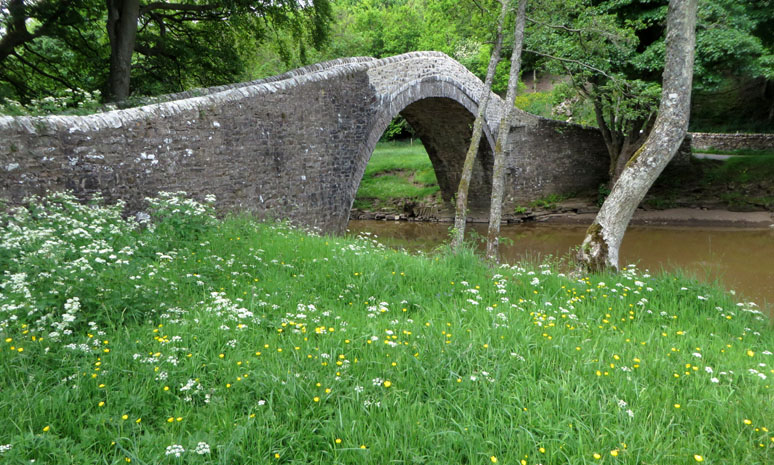
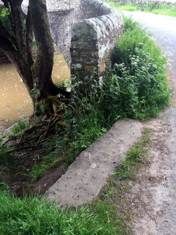
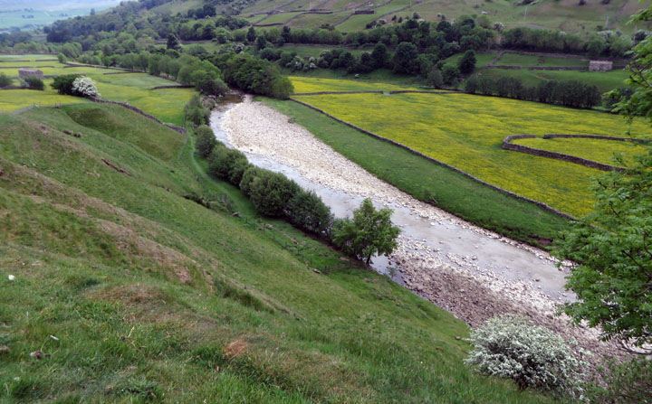
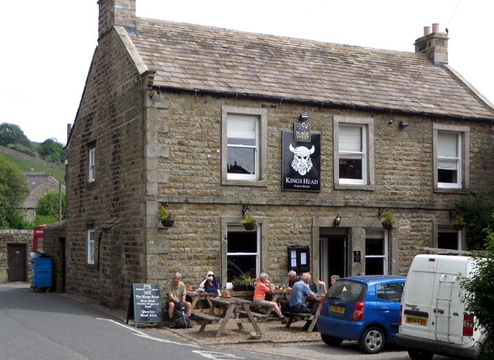
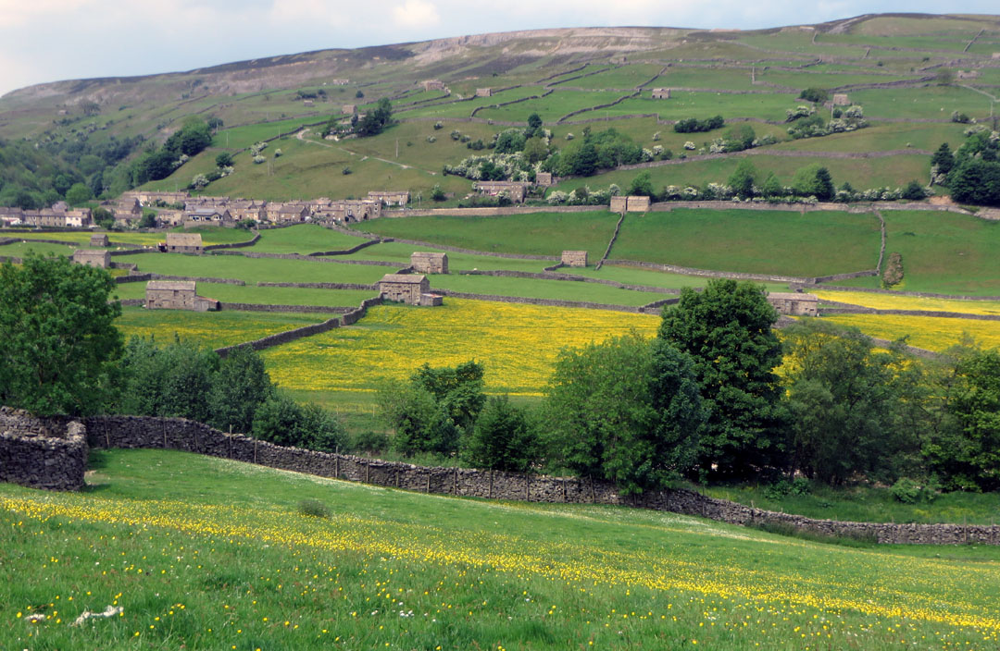

The Inn Way to the Yorkshire Dales
Day 3: Askrigg to Reeth
Home **
Previous Day **
Next Day
We left Askrigg on a small road, climbing steadily for
several miles up to Askrigg Common. Stopping and looking back, we had
views to the flat top of Attleborough.

We crossed open moorland
for a few miles before beginning to see down into Swaledale. Oxnop
Gill was on our left as we began dropping down.

Some of the farms were in
the long-house style, a type introduced by the Vikings, in which the
house and barn were at the two ends of the same building.

On down through the fields we went.

As we neared the river,
we came to large areas of wild garlic. I love it!

Soon we arrived at the
River Swale, at Ivelet Bridge. This is a packhorse bridge, built
in the 16th century.

This bridge was on a
"Corpse Way". The dead had to be carried to the church in Grinton, and
this bridge was on the route. At one end of the bridge is a
coffin stone, where the wicker basket carrying the corpse could be
rested.

We walked through fields
above the river. The Swale is usually fast-flowing, but now it
seemed dry and sluggish.

The King's Head in Gunnerside provided our lunch
break, and we joined others at picnic tables in front. Some of
them were walking the Coast-to-Coast. Both the Coast-to-Coast and
our Inn Way were aiming for the night at Reeth, but the two routes are
different.

Leaving Gunnerside we crossed back over the Swale. There were
outstanding views over the fields and field barns, back toward the
village.

Home **
Previous Day **
Next Day